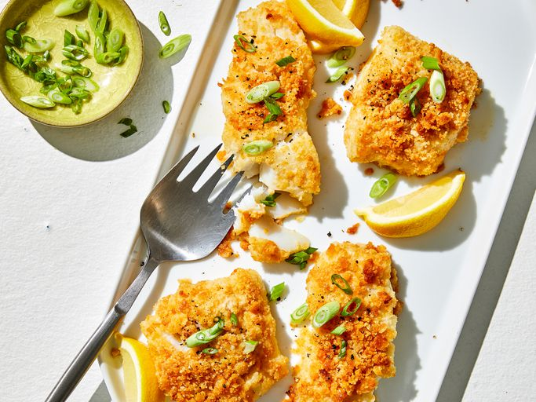

Home
Baked Cod

Description
A tasty dish of baked cod covered in buttery crackers and cooked in butter, white wine and lemon juice.
Ingredients
- 1 lb of cod lions or fillets
- 4 tablespoons of butter, seperated
- Juice of half a medium lemon
- Half a sleeve of crushed Ritz or similar crackers
- Half cup of a dry white wine
- Chopped parsley
- Choppped green onion
Steps
- Prepare all ingredients and preheat oven to 400 degrees Fahrenheit.
- In a microwave safe bowl place two tablespoons of butter. Melt for 30 seconds or so on high. Stir into crushed crackers.
- Place remaining two tablespoons of butter in baking dish and melt in preheated oven for about 1 - 3 minutes.
- Remove baking dish and place cod inside, covering all sides with the butter.
- Bake cod for 10 minutes. Remove and cover with lemon juice, wine, and crackers. Return and bake another 10 minutes.
- Remove, garnish with onion and parsley, and serve.
Original recipe here